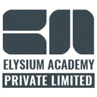
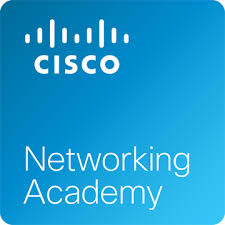
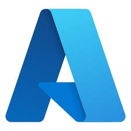

Certifications Details

Hacking Defender
Elysium Academy
July 2020"Earned the **Hacking Defender Certification**, demonstrating proficiency in cybersecurity principles, ethical hacking, and defense strategies against cyber threats."

Cisco Networking Academy
Data Science | JavaScript
Sept 2024Data Science Certification: Gained expertise in data analysis, machine learning, and statistical modeling. JavaScript Certification: Developed proficiency in frontend scripting, DOM manipulation, and interactive web development..

Microsoft Azure
Fundamentals of Azure Az-900
Microsoft Azure Certified – Demonstrated expertise in cloud computing, covering Azure fundamentals, services, and deployment strategies
NPTEL Certification
Introduction to Industry 4.0 | Progranming in Java
june 2023 - june 2024Introduction to Industry 4.0 – Gained insights into modern industrial automation, smart manufacturing, IoT, and AI-driven production systems. Programming in Java – Learned core Java concepts, object-oriented programming, data structures, and exception handling for robust application development.
AWS Skill Builder
Jan 2025Explored the fundamentals of Prompt Engineering, learning to craft effective AI prompts for optimized responses. Gained hands-on experience in enhancing AI-generated outputs for various applications
Simplilearn
Basics Of UI/UX
Jan 2025Introduction to Industry 4.0 – Gained insights into modern industrial automation, smart manufacturing, IoT, and AI-driven production systems. Programming in Java – Learned core Java concepts, object-oriented programming, data structures, and exception handling for robust application development.